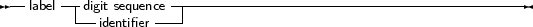

A label is a name for a location in the source code to which can be jumped from another location with a Goto statement. Labels can be digit sequences or identifiers.
_________________________________________________________________________________________________________Label

___________________________________________________________________
Remark: The -Sg or -Mtp switches must be specified before labels can be used. By default, Free Pascal doesn’t support label and goto statements. The {$GOTO ON} directive can also be used to allow use of labels and the goto statement.